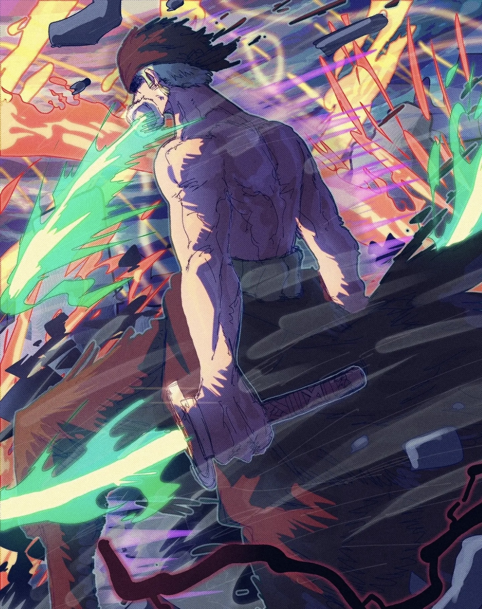

Welcome to the world of One Piece
"One Piece" is an adventure manga created by Japanese manga artist Eiichiro Oda, and was first serialized in "Weekly Shonen Jump" on July 22, 1997. The manga tells the story of the protagonist Monkey D. Luffy leading his companions on an adventure to find the legendary treasure "ONE PIECE" in order to become the Pirate King.
About this anime
The story is set in a vast ocean world where pirates run rampant. Various strange abilities, dangerous creatures, mysterious treasures and sea adventures form the core of the story. Luffy and his companions (known as the "Straw Hat Pirates") travel through various dangerous islands and seas, solve mysteries one by one, challenge the world's strongest enemies, and gradually approach the goal of becoming the Pirate King.